Where the project stands
Motivation
Risk needs derivatives, not just prices
A bank holding options must continuously know how each price moves with every input: spot, strike, maturity, rate and each model parameter. These sensitivities are the Greeks. Under the Heston stochastic-volatility model there is no closed-form price, so it is computed numerically; this project uses the Fourier-cosine (COS) method with 128 terms.
The usual method is slow and inaccurate
Bump-and-reprice nudges each parameter and prices again. Nine Greeks cost 19 pricings with central differences, and the result depends on a bump size with no safe choice: too small and rounding dominates, too large and truncation does. On this hardware its best case is still 10–1000× less accurate than AAD.
AAD is the fix, but only in software
Reverse-mode algorithmic differentiation (AAD) gets every Greek from one backward sweep over the pricing computation, at a small constant multiple of one pricing. Software AAD records a tape and replays it, typically costing 3–5 pricings. To our knowledge it had not been built as a hardware datapath; that claim still needs a completed literature check.
Aim and claims
Build a generator that turns the Heston-COS price and its adjoint sweep into one fixed-point, resource-shared, modulo-scheduled Verilog datapath that fits a Zynq-7020, is provably accurate, and runs on a real board.
The three claims that carry the paper
AAD with no tape. COS pricing runs the same operations for every input, so the reverse sweep can be unrolled at design time into a fixed datapath: no tape memory, no replay sequencer. Evidence: generated RTL bit-exact on 5 designs, now on silicon.
Nine Greeks for 1.04 pricings. On the Zynq-7020 design the iterative CORDIC units set the pace, leaving multiplier slots idle that the adjoint's multiplies fill. The condition matters: on the 64-bit design, where multipliers bind, the ratio is 1.55×.
A guaranteed error bound for every Greek. AAD applied a second time, to the hardware's own rounding model, bounds the error of each output. Measured error never exceeds 0.103 of that bound on the grid, 0.199 on the 50 random cases.
Work done
46 days, 39 commits, two hardware generations, one board.
Black-Scholes and Heston models, software AAD engine, MATLAB and C++ prototypes.
Heston AAD in 64-bit fixed point: correct, but 433,779 cycles and far too many multipliers for a Zynq-7020.
Precision bugs fixed, first-order error bound, bump-and-reprice baseline, then the IR, modulo scheduler and RTL generator. 92× fewer cycles.
Out-of-context implementation scripts, viva study guide, the full course document.
AXI4-Lite register file, ZedBoard JTAG and PS designs. First complete route: fits the Zynq-7020 at 68.6% LUT, Fmax about 79 MHz.
ZedBoard bitstream at 70 MHz. One vector, then 50 cases, all bit-exact. Calls re-derived through put-call parity: worst call price error 75× smaller.
Speed: cycles for price + 9 Greeks
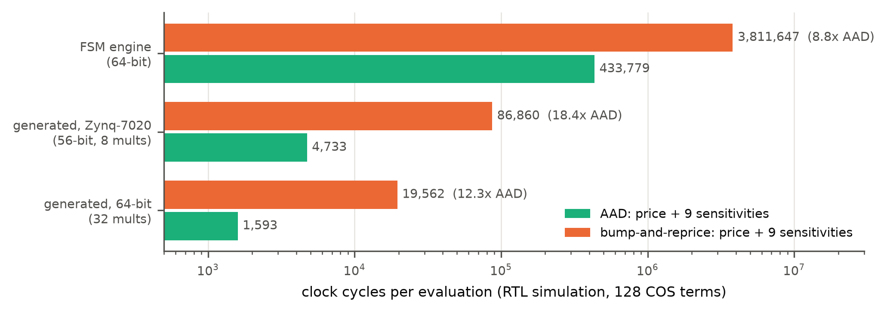
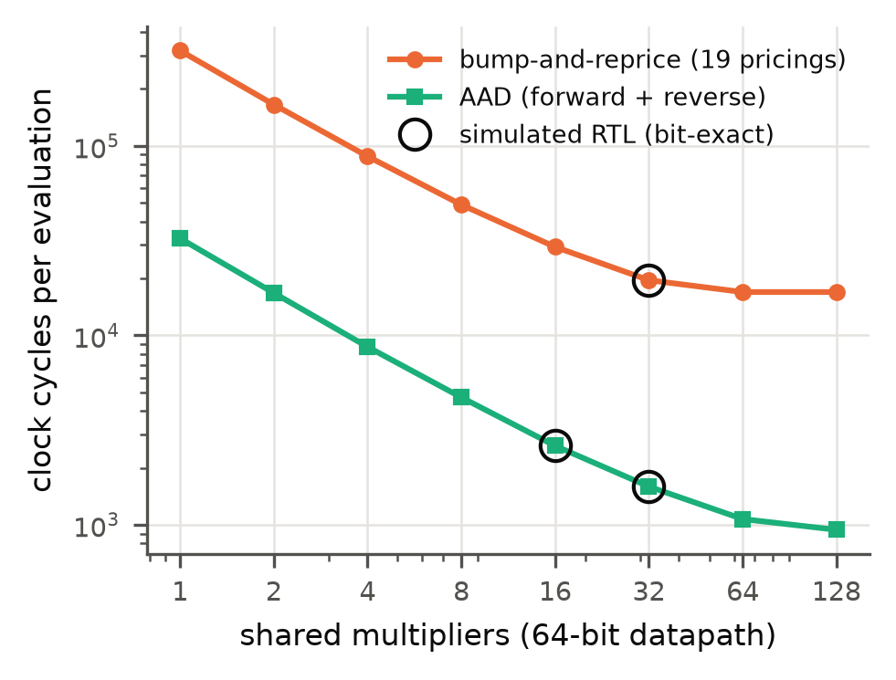
| Design | AAD | Price only | Bump | Bump ÷ AAD |
|---|---|---|---|---|
| FSM engine, 64-bit | 433,779 | 200,562 | 3,811,647 | 8.8× |
| Zynq-7020, 56-bit, 8 mult | 4,733 | 4,568 | 86,860 | 18.4× |
| Host-setup loop (on board) | 4,572 | — | — | — |
| 64-bit, 32 mult | 1,593 | 1,026 | 19,562 | 12.3× |
| Config | Multipliers | II | AAD | Price only | Bump | Bump ÷ AAD |
|---|---|---|---|---|---|---|
| Zynq-7020 (56/28) | 2 | 125 | 16,754 | 8,700 | 165,368 | 9.9 |
| Zynq-7020 (56/28) | 4 | 63 | 8,694 | 4,613 | 87,715 | 10.1 |
| Zynq-7020 (56/28) | 8 | 32 | 4,733 | 4,568 | 86,860 | 18.4 |
| Zynq-7020 (56/28) | 16 | 32 | 4,621 | 4,563 | 86,765 | 18.8 |
| 64-bit (64/32) | 1 | 250 | 32,530 | 16,773 | 318,755 | 9.8 |
| 64-bit (64/32) | 4 | 63 | 8,700 | 4,636 | 88,152 | 10.1 |
| 64-bit (64/32) | 8 | 32 | 4,709 | 2,573 | 48,955 | 10.4 |
| 64-bit (64/32) | 16 | 16 | 2,614 | 1,540 | 29,328 | 11.2 |
| 64-bit (64/32) | 32 | 8 | 1,593 | 1,026 | 19,562 | 12.3 |
| 64-bit (64/32) | 64 | 4 | 1,073 | 888 | 16,940 | 15.8 |
| 64-bit (64/32) | 128 | 3 | 942 | 888 | 16,940 | 18.0 |
II is the initiation interval: cycles between the starts of consecutive COS terms. On the Zynq-7020 design, 8 multipliers, 3 CORDIC rotators and 2 vectorers all give II = 32, so a 16th multiplier buys only 2%. Each term costs 250 multiplies, 3 CORDIC rotations and 2 vectorings. The bump advantage beyond the ~9.6× work ratio comes from the idle multiplier slots AAD fills.
Accuracy
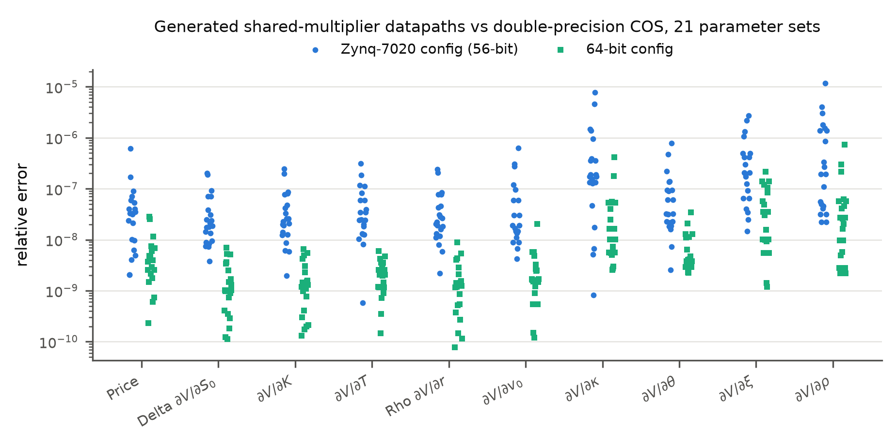
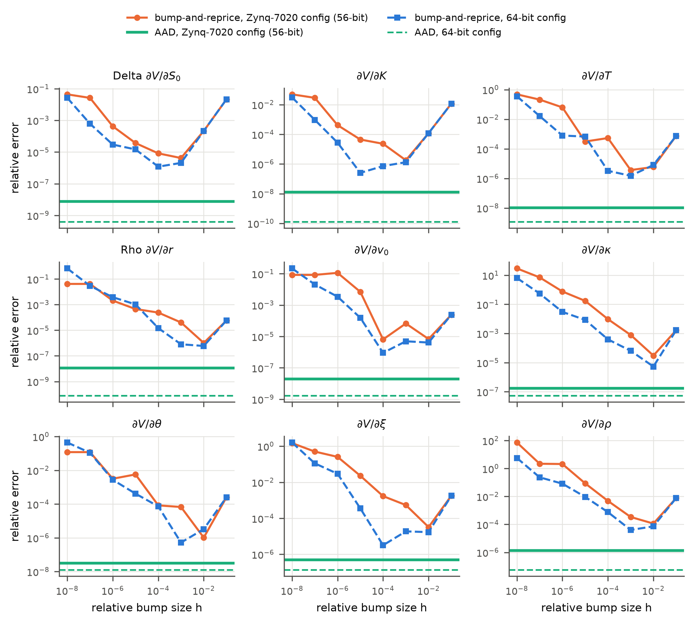
| Output | Zynq-7020, worst rel. error | 64-bit, worst rel. error | Worst error ÷ bound |
|---|---|---|---|
| Price | 6.1e-7 | 2.8e-8 | 0.074 |
| Delta ∂V/∂S₀ | 2.0e-7 | 6.9e-9 | 0.049 |
| ∂V/∂K | 2.5e-7 | 6.6e-9 | 0.051 |
| ∂V/∂T | 3.1e-7 | 6.0e-9 | 0.093 |
| Rho ∂V/∂r | 2.4e-7 | 8.9e-9 | 0.049 |
| Vega ∂V/∂v₀ | 6.2e-7 | 2.0e-8 | 0.103 |
| ∂V/∂κ | 7.8e-6 | 4.1e-7 | 0.098 |
| ∂V/∂θ | 7.9e-7 | 3.4e-8 | 0.102 |
| ∂V/∂ξ | 2.7e-6 | 2.2e-7 | 0.099 |
| ∂V/∂ρ | 1.2e-5 | 7.4e-7 | 0.087 |
The bound column is the largest ratio across both designs. A ratio below 1 means the guaranteed bound held; all are at most 0.103, so the bound is safe and about ten times conservative.
Calls through put-call parity
The 50-case board sweep showed calls carrying about 180× the rounding error of puts. A call's COS coefficients contain eb, which grows large over a wide truncation range and then cancels. The design now always computes the put and adds S₀ − K·e−rT and its derivatives on the host. Measured on the 22 calls of the sweep, against the independent Fourier-integral price:
| Worst absolute error over 22 calls | Direct call | Put + parity | Gain |
|---|---|---|---|
| Price | 2.3e-3 | 3.1e-5 | 75× |
| Price, median | 4.8e-5 | 5.4e-7 | ~90× |
| ∂V/∂κ | 2.4e-3 | 3.9e-4 | 6× |
| ∂V/∂θ | 1.7e-2 | 2.5e-3 | 7× |
| ∂V/∂ξ | 1.3e-2 | 1.8e-3 | 7× |
| ∂V/∂ρ | 8.3e-3 | 4.7e-4 | 18× |
| Delta, ∂V/∂K, ∂V/∂T, rho, vega | — | — | 2–2.5× |
Cost: 4,731 → 4,733 cycles on the Zynq-7020 design, 1,599 → 1,593 on the 64-bit, one multiply per term fewer (251 → 250), 16 host constants instead of 19. After the change the FPGA's error matches the double-precision COS method's own error, so rounding is no longer the limiting factor. Predicted for the board re-run: worst price error over the 50 cases 2.3e-3 → 1.5e-5.
Vivado implementation
| Build | LUT | FF | DSP | Clock | WNS | Power |
|---|---|---|---|---|---|---|
| Engine only, out of context, xc7z020clg400-1 | 36,499 (68.6%) | 28,559 (26.8%) | 72 (32.7%) | 100 MHz | −2.639 ns | 0.258 W |
| ZedBoard system, xc7z020clg484-1 | 38,358 (72.1%) | 32,206 (30.3%) | 72 (32.7%) | 70 MHz | +0.404 ns | 0.341 W |
Fmax is about 79 MHz for the engine alone and about 72 MHz inside the ZedBoard system; both are limited by 64-bit carry chains and multiplier outputs, mostly routing delay. Power is Vivado's vectorless estimate; 0.121 W of the board figure is the clock generator. Both builds predate put-call parity, which changes the RTL slightly. Vivado's 67 DRC warnings are 56 suggestions to use the DSP blocks' internal registers, the likely route to 100 MHz, plus routine notices; no errors.
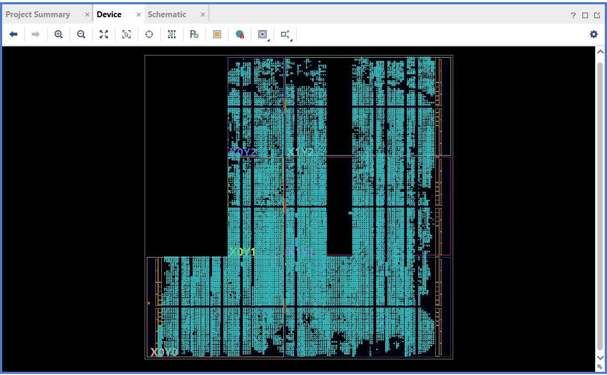
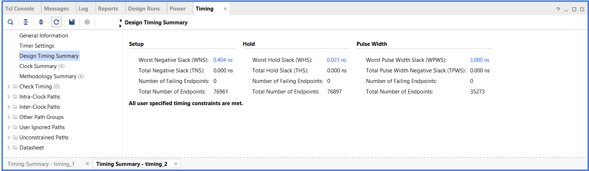
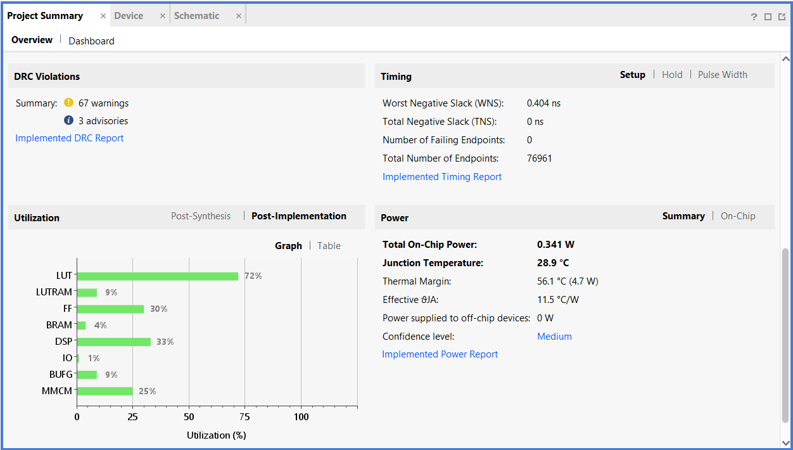
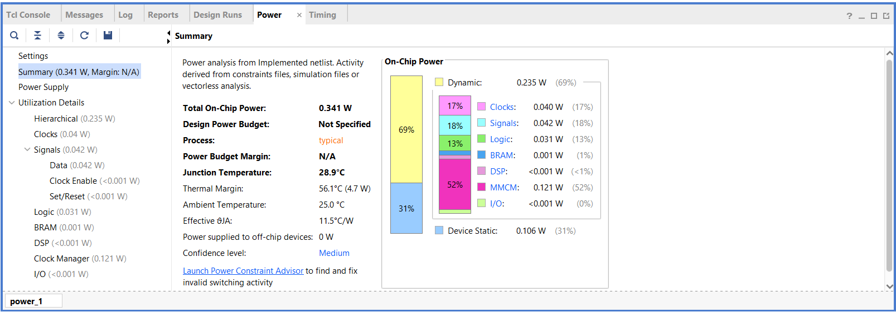
Block diagram of the board system: Block_design.pdf (clock generator → reset → JTAG-to-AXI master → AXI SmartConnect → engine).
On the ZedBoard
Test method
Vivado drives the engine over the JTAG cable through a JTAG-to-AXI master: no processor software involved. The PC writes the inputs, starts the engine, polls for done, reads the 9 raw sums and compares them bit for bit with the emulator. The host then turns the sums into the price and 9 Greeks.
Sweep design
2 fixed cases plus 48 random draws over the verified input domain, 22 calls and 28 puts, using a seed the hardware's shifter ranges were not tuned on. Cases run back to back with no reset between them, so leftover state would show. The script was tested against a software model of the board with injected faults before use.
| Run | Cases | Bit-exact results | range_err | Worst error ÷ bound | Wall time |
|---|---|---|---|---|---|
| First vector | 1 | 9 / 9 | 0 | 0.031 | — |
| Sweep | 50 | 450 / 450 | 0 | 0.268 | 56.9 s |
Almost all of the 56.9 s is JTAG register traffic; the engine computes each case in about 65 µs. These runs used the bitstream built before put-call parity; after the rebuild the same 50 cases are ready to re-run, with the worst error ÷ bound predicted at 0.199. Logs and reports: validation/results/board_*.
Generation 1: the hand-written FSM engine
The first engine, 64-bit fixed point (Q32.32), established the error model and the bump-and-reprice comparison that generation 2 inherited.
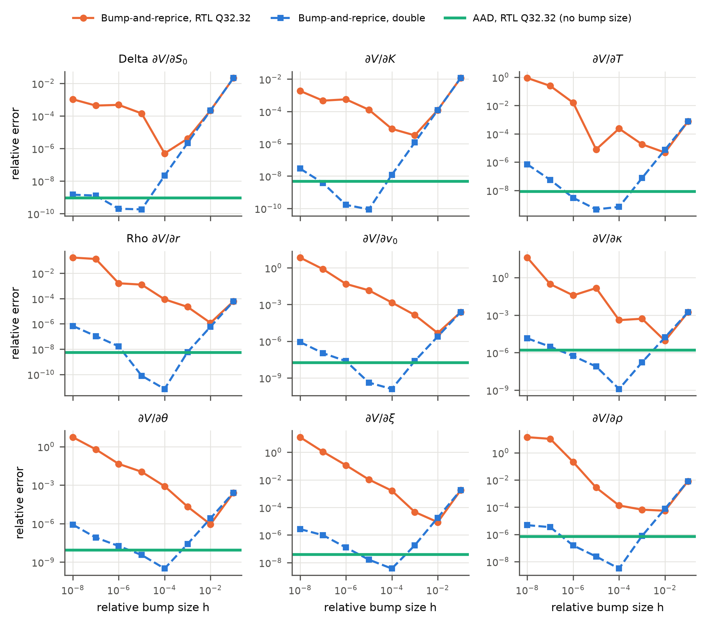
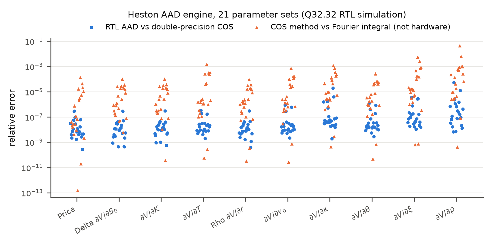
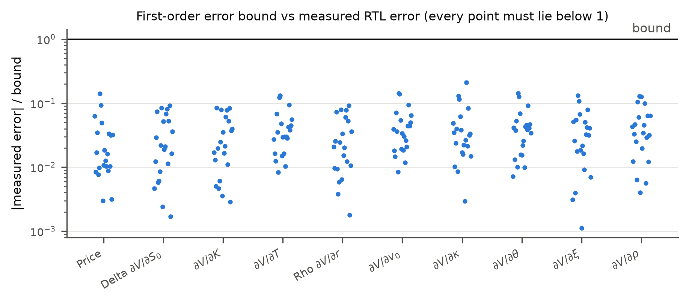
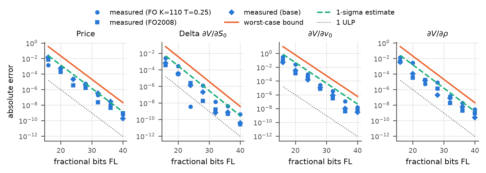
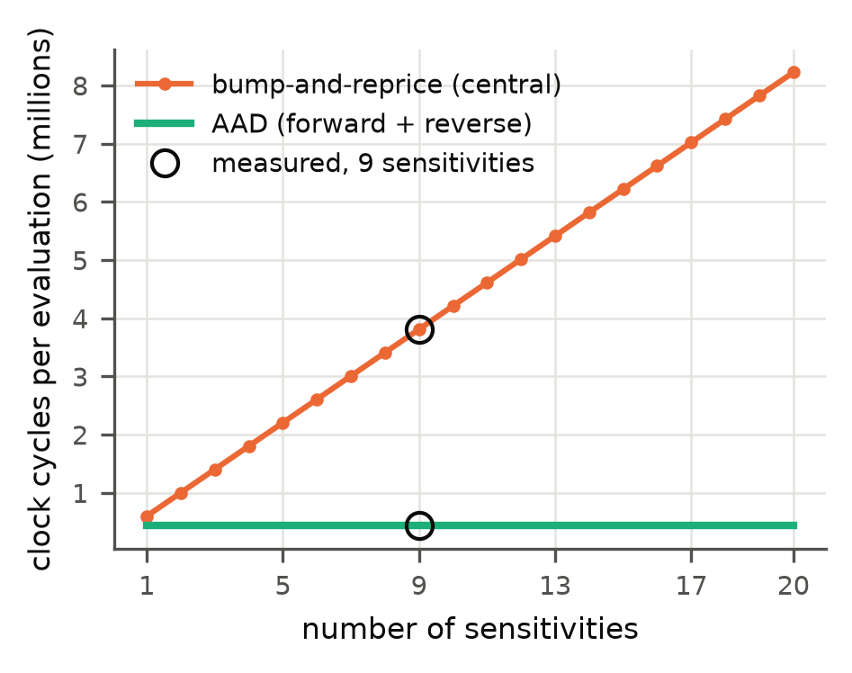
Known limits
The engine misses 100 MHz by 2.6 ns on 64-bit carry chains. Latency figures use the measured Fmax.
The on-silicon results used the design before put-call parity. The new RTL passes all simulation checks and needs a rebuild and re-run.
Setup and finish are Python on the PC, not C on the ARM. The processor-based design exists as a script but is not built.
Vectorless, 12.5% toggle rate. No simulated-activity (SAIF) figure or board measurement yet.
"First hardware AAD for option Greeks" rests on an unfinished literature search, including an unresolved citation.
Verified for S₀ = 100, K 60–150, T 0.1–3, and ranges for each model parameter. Outside it the hardware raises range_err instead of returning a wrong value.
Next steps
In order of value for the paper.
Brings the silicon result up to the current design. Scripts, vectors and the report are ready: about 40 minutes of build and 1 minute on the board.
Confirm or narrow the "first hardware AAD for Greeks" claim and resolve the Weiss et al. citation. N2 and N4 stand either way.
The same Heston-COS pricer with software AAD, in microseconds, so reviewers can place 57.8 µs.
Use the DSP blocks' internal output registers (Vivado's 56 suggestions) and pipeline the 64-bit carry chains. Cycle counts change; bit-exactness does not.
Bit-exact C for setup and finish, with a hand-written 64×64→128-bit multiply for the 32-bit ARM, then bd_lite.tcl: no PC in the loop.
Simulated switching activity (SAIF) through Vivado, or a rail measurement on the board.
Open a pull request from pipeline-shared-mult once the board re-run passes.